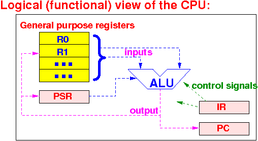
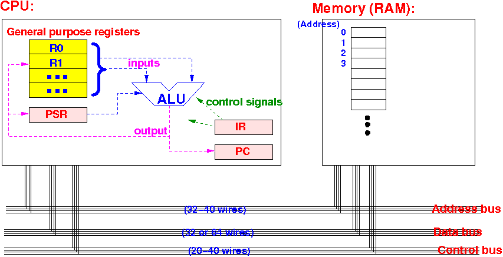

- Compute:
- Compute = calculate
- Computer:
- Computer =
a machine that
repeatedly
performs a (series of different)
computing
instructions
My mechanical representation of a computer:

I.e.: a computer can only compute (and store the result of a computing away)
Specifically, a computer can only execute these (computing) instructions:
- Arithmetic operations on 2 numerical values (e.g.: +, −, ×, /)
- Compare 2 numerical values (e.g., >, ≥, <, ≤, ==, != )
- Logical operations on
2 boolean values
(e.g.: AND, OR, NOT)
- Store (save) the (computed) value
- Computer =
a machine that
repeatedly
performs a (series of different)
computing
instructions
- In CS355, you will learn
how to make
electrical circuits that perform
computations on
binary numbers
Just a taste of some circuits that you will learn:
- A circuit that can add two 4-digit binary numbers: /home/cs255001/demo/355/add-circuit
- A circuit that can multiply two 4-digit binary numbers: /home/cs255001/demo/355/multiply-circuit
- The most important component
(in fact, it's the component that
performs the
repeated computations) is:
- The Central Processing Unit (CPU)
- Function of the
Central Processing Unit is:
- Fetch (obtain) the next computer instruction
- Execute the (fetched) instruction
- In order to perform
these functions,
the CPU contains
components
(= circuits that will be discussed
in CS355) that
enable the CPU to
do its job
- We will now study the logical structure (= the components and their functions) of the CPU (that enable it to perform its functions)
- The CPU contains the
following component to
enable it to perform its function:
 The CPU contains:
- A number (about 10 or so) of
general purpose registers
- A register is a memory device that can store 8, 16, or 32 bits values
- General purpose means that the register can be used for multiple (different) purposes
Most common use of general purpose registers:
- General purpose registers are
used as
inputs and
outputs
in arithmetic and logical operations
performed by the CPU
Example:
- When the CPU add 2 values ....
- The first value of the addition is obtained from a general purpose register
- The second value of the addition is obtained from another general purpose register
- The sum is stored in a general purpose register
- An Arithmetic and Logic Unit (ALU):
- The ALU is a complex digital circuit can perform arithmetic (+, −, ×, /) and logical (AND, OR, NOT) operations
Here is a simple ALU circuit that can perform 4 operations on its inputs: /home/cs255001/demo/355/ALU-circuit
In CS355, you will learn how to make this simple ALU circuit
- A number of special purpose register
- These registers also store binary values (32 or 64 bits)
- They are "special purpose" meaning that
the value stored
in the register is used
for one (special) purpose
(I.e.: each special purpose register has a dedicated function)
A CPU will always contain the following 3 special purpose registers:
- Program Counter (PC):
- The value in the PC register is the adddress (in the RAM) of the next computer instruction
- Instruction Register (IR):
- The value in the IR register is the instruction code of the current instruction that the CPU will execute.
- Processor Status Register (PSR):
- The value in the
PSR register is the
status code of the
result after
executing the last (executed)
instruction
Example: if the last instruction was "x − y", then PSR will contain status information that indicate whether x < y or x ≤ y or x > y etc...
- The value in the
PSR register is the
status code of the
result after
executing the last (executed)
instruction
Each of the special purpose register is used for a specific purpose
These 3 special purpose registers together enable the CPU to:
- Fetch the next computer instruction (in memory given by the Program Counter !)
- Execute the (fetched) instruction
We will see how this is done soon.
BTW: In CS255, we will only study the CPU operation at the functional level.
In CS355, you will learn how make a complete working CPU using digital circuits !!!
- A number (about 10 or so) of
general purpose registers
- The following
diagram show
the complete picture
of the computer system
(consisting of the CPU
and
memory):
 There are additional details inside the CPU and memory that have been omitted for simplicity
Specifically:
- I did not show how
the wires of
the address bus
data bus and
control bus are
connected to
components inside the
CPU or inside the
memory
You need to take CS355 if you want to know the details
- It is sufficient to know
that:
- Values (= signals) from the address, data and control buses are processed by the CPU and memory to enable them to perform theire functions
- I did not show how
the wires of
the address bus
data bus and
control bus are
connected to
components inside the
CPU or inside the
memory